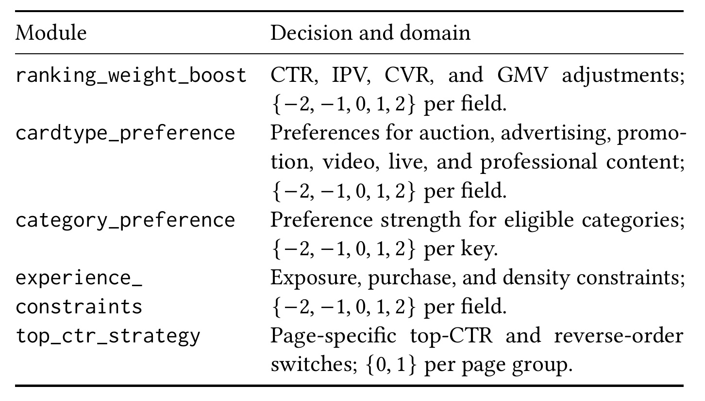
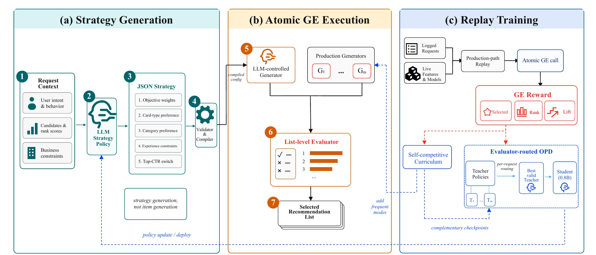
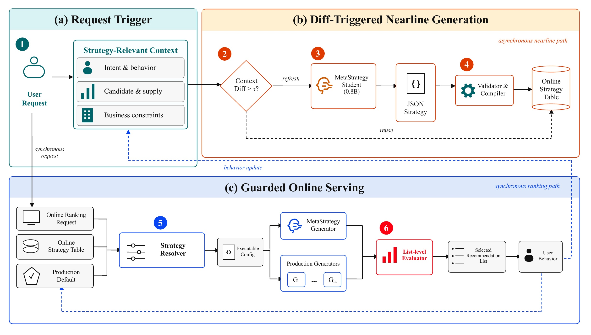
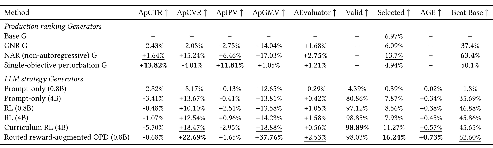
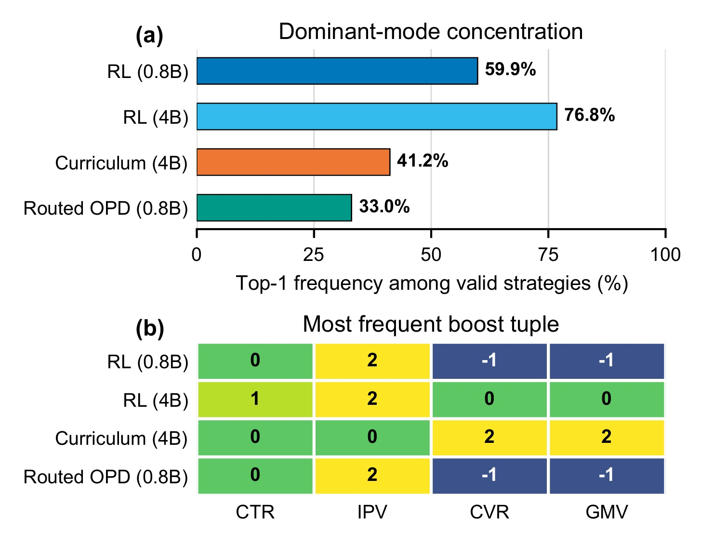

MetaStrategy：让 LLM 生成“可执行排序策略”，而不是生成 Item 排列
MetaStrategy 由阿里巴巴淘宝天猫集团与武汉大学、香港大学、剑桥大学等机构的研究者合作完成，第一作者 Chengyu Lai 的主机构为淘宝天猫集团。本文精读以 2026 年 8 月 10 日公开的 arXiv:2608.09440 v1 为事实入口。它目前应标注为 arXiv 预印本：PDF 首页自称将发表于 KDD ’27，但该会议信息尚无法独立核验，不能据此写成已正式录用或已发表。PDF 未给出可核验的独立代码仓库或项目页，本轮也未发现公开代码，因此代码状态记为“未发现公开代码”。
这篇论文值得关注的地方，不只是“把 LLM 用到推荐排序”，而是它重新划分了 LLM 与成熟工业推荐系统之间的职责：LLM 不生成物品 ID，也不直接排列最终列表，而是生成一个带类型、受边界约束、可校验、可编译的 JSON 策略包；已有排序器负责执行该策略，已有列表级 Evaluator 负责在多个候选列表之间作最终选择。由此，生成模型的联合决策能力被嵌入既有生产栈，而过滤、配额、体验约束、回退和在线时延边界仍由确定性系统掌握。
工业推荐的一次请求往往同时受点击、转化、成交、广告、内容结构、密度与位置规则约束。直接生成物品序列很难复用成熟预测模型和硬规则，而逐个调节既有参数又忽略决策之间的耦合；真正的矛盾是：怎样让模型针对请求联合生成足够丰富的排序决策，同时保证这些决策可执行、可审计、可回退，并且不把 LLM 推理延迟带入同步排序链路。
1. 背景和问题
大型电商首页并不是把同一种商品按一个相关性分数排好即可。论文所描述的淘宝“猜你喜欢”场景同时容纳商品、内容帖子、短视频、直播与广告，不同卡片有不同的点击、详情页访问、转化、成交和商业价值目标，却竞争同一组曝光位置。生产系统通常先由召回与精排模型给出候选和预测分数，再由策略层协调目标权重、内容组成、类目偏好、曝光过滤、密度约束及头部位置规则。策略层的价值在于把模型预测转化为满足业务与体验边界的最终列表，但传统策略大多是全局公式、人工配置或若干独立规则，难以针对一次请求联合适配。
这个问题不能简单归结为“多目标打分权重不好调”。假设点击目标的权重被提高，它仍可能被首屏位置策略覆盖；某类内容获得加权后，又可能在重排阶段触发密度上限；一个提升交易额的策略，也可能压低点击或内容消费。规则之间存在执行顺序、相互覆盖和硬约束，最终效果由整个列表决定，而不是由单个候选的局部分数决定。因此，合理的动作应同时依赖当前用户意图、长期行为统计、最近交互序列、候选供给结构与正在生效的业务约束，并且一次输出多个相互协调的模块。
已有生成式推荐通常走另一条路线：把推荐表述为文本生成、语义 ID 生成、物品序列生成或自回归 slate 构造。这些方法理论上能够建模列表内部依赖，但要接入成熟高流量系统时会产生新的边界问题。生成器必须重新承担过滤、预测校准、配额、安全限制和位置规则；生成的物品排列若违反某个业务条件，系统很难只修正其中一个策略字段；直接让 LLM 决定每个物品的位置，还会使推理成本随列表构造过程增长。即使模型离线指标优秀，也未必能安全替换已运行多年的生产排序栈。
MetaStrategy 的关键转向是：生成策略，不生成物品。模型的输出不是物品 ID 或排列，而是一组面向既有排序器的语义动作，包括目标权重调整、卡片类型偏好、类目偏好、体验约束和头部点击策略。确定性的 validator 与 compiler 把这些动作翻译成生产参数，随后只有一个隔离的 LLM-controlled Generator 使用它们生成列表。该列表不会天然取得流量，而要和约十个既有 Generator 在同一次 Generator-Evaluator 调用中竞争，由共享的列表级 Evaluator 选出最终结果。
这种设计利用了生产系统已有的 GE 架构。设一次请求的上下文为 $x$，共享候选集为 $I=\{i_1,\ldots,i_n\}$，策略为 $s_j$，第 $j$ 个 Generator 生成长度远小于候选集的列表：
列表级 Evaluator 对完整列表赋值：
其中，$\mathcal C$ 是当前有效 Generator 集合，$u_j$ 是同时考虑用户、物品、位置与业务上下文后的列表效用。Evaluator 的监督头覆盖点级点击和交易行为、下滑行为、列表级点击结果与有效千次曝光成本等信号，其校准组合代表平台用于选列表的代理目标。MetaStrategy 不替代 Evaluator，而是在它划定的决策边界内搜索更合适的请求级策略。
这一设定带来两个新的学习难题。第一，Evaluator 仍是学习得到的代理模型，不等于真实长期用户价值。直接强化其奖励时，策略可能发现稳定的“投机模式”：把若干字段反复推到边界，针对不同请求都生成近似相同的 bundle，离线得分却很高。论文称之为 strategy collapse。第二，大模型适合离线探索策略空间，但 4B Teacher 不符合目标服务预算；最终需要一个 0.8B Student，同时又不能通过普通蒸馏抹掉不同 Teacher 的互补性。
论文据此提出三层解决方案。其一，生产路径回放让不同策略在相同请求、候选、精排分数和一次 Evaluator 状态下原子比较，获得比本地用户模拟器更贴近线上排序栈的反馈。其二，自竞争课程把当前策略最常生成的编译后模式冻结成下一轮显式竞争者，迫使新策略战胜自己的高频捷径。其三，Evaluator-routed reward-augmented on-policy distillation 在每个请求上选择表现最好的有效 Teacher，把其 token 概率用于 Student 的 on-policy 更新，同时保留 Student 自身的 GE 强化学习优势。整个框架要回答的不是“LLM 能否输出 JSON”，而是生成的策略是否能执行、是否能给既有 Generator 池带来边际价值、是否避免塌缩，以及最终是否能在不增加可观测排序 RT 的条件下产生在线收益。
2. 方法
2.1 请求上下文、生成目标与可执行动作空间
MetaStrategy 的输入由三类用户视图和两类请求侧信息组成。第一类是上游意图模型给出的实时多意图表示，它是对当前兴趣状态的压缩；第二类是历史统计，用于描述更长期的偏好与参与度；第三类是有序的近期行为序列，包括点击、加购、购买等事件，用于保留压缩意图状态可能丢失的时间证据。除此之外，策略还观察候选及供给摘要、请求状态和当前业务约束。在部署中，候选规模约为数百，真正曝光的列表只有数十项，因此 LLM 决定的是如何配置重排过程，而不是逐一阅读数百候选后生成排列。论文先用一个简化多目标公式说明策略层的职责：
符号解释： $q(i\mid x)$ 是上下文 $x$ 下物品 $i$ 的组合排序分；$\hat v_{\mathrm{eng}}$、$\hat v_{\mathrm{txn}}$ 与 $\hat v_{\mathrm{com}}$ 分别表示参与、交易和商业价值预测；$\alpha(x)$、$\beta(x)$、$\gamma(x)$ 是请求相关权重。这个式子只是简化示意，因为最终列表还受过滤、供给混排、多样性与位置规则影响。MetaStrategy 的目标不是重新估计各个 $\hat v$，而是生成能协调预测与规则的请求级联合策略。设 $\mathcal A$ 为 schema 约束下的策略空间，$\pi_\theta(a\mid x)$ 为 LLM policy，$a\in\mathcal A$ 为一个完整 JSON bundle。确定性工具过程 $T$ 把语义动作编译为生产参数，使用这些参数的隔离 Generator 记为 $G^{T(a)}$。总体优化目标为：
该目标同时满足 schema 合法性、可执行性和平台 guardrail。目标中的 $\mathcal D$ 是请求分布，$E$ 是已有列表级 Evaluator。模型不是直接最大化某个 item 的点击概率，而是最大化“编译策略执行后所产生完整列表”的 Evaluator 效用。动作与奖励之间隔着编译器、生产重排器和列表级评估，因此学习的是一种可执行控制策略。一个 bundle 含多个按固定顺序生成的模块，policy 采用自回归分解：
其中 $M=5$，$a_m$ 是第 $m$ 个模块，$a_{<m}$ 是此前已经生成的模块。各字段本身的取值域很小，但联合空间会随字段数指数增长，后生成模块还可能加强或覆盖前面的决定。因此，不能把每个字段看成互相独立的多分类任务；自回归结构的意义正是在一个 bundle 内表达依赖。核心机制不是让 LLM 任意改写排序，而是让它在固定、可编译的联合动作空间中表达跨模块依赖。论文当前部署的五类动作如下。
ranking_weight_boost：分别调整 CTR、IPV、CVR、GMV，单字段取值为 $\{-2,-1,0,1,2\}$。cardtype_preference：调整拍卖、广告、促销、视频、直播和专业内容等卡片类型偏好，单字段同样取五档序数值。category_preference：对符合条件的类目指定五档偏好强度。experience_constraints：调节曝光、购买和密度相关约束，仍使用五档有界值。top_ctr_strategy：为不同页面组选择 top-CTR 或反向顺序模板，字段取值为 $\{0,1\}$。
这些序数值表达相对偏好或调整强度，不直接替代精排分，也不能绕过硬业务与体验规则。完整输出必须包含要求的模块与字段，顺序、类型、枚举和范围均需合法。schema 特意排除了 item ID、自由代码和直接 permutation，从动作空间层面限制 LLM 的权限。

Table 3 应从“控制面契约”而不是普通特征表来读。五个模块覆盖了多目标权重、供给结构、类目结构、体验约束与首屏模板，说明 LLM 的能力来自联合配置既有机制，而不是创造任意新算子。四组五档字段提供有限但可组合的动作，二值开关则只启用经过审计的页面策略；字段边界越清楚，validator 越容易拒绝未知行为，回放与线上也越容易保持一致。另一方面，表中动作空间也揭示了方法的上限：生产 ranker 没有暴露的能力，policy 再强也无法使用。因而 schema 既是安全边界，也是表达能力瓶颈。复现时不能只模仿 JSON 外形，还要为每个字段定义确定的生产语义、版本、范围、默认值、冲突解决次序与硬约束，否则相同 token 在训练和服务中可能对应不同执行结果。表中没有 item ID 和自由代码尤其关键，它让生成策略可以被审计、缓存和回退，也避免 LLM 越过现有过滤及安全链路。
2.2 校验、编译、隔离 Generator 与生产路径回放
LLM 输出先经过四道确定性关卡。第一道从固定 answer delimiter 中抽取回答并解析 JSON；第二道校验模块完整性、顺序、字段类型、枚举和值域；第三道由工具过程把语义动作映射为 Generator 配置、多样性规则和首屏位置参数；第四道只把编译配置挂到指定的 MetaStrategy Generator。Student 输出若非法，会得到格式惩罚并跳过工具执行；多 Teacher 训练中，非法 Teacher 只从本次路由集合移除，其他有效策略仍可参与比较。这是一种 fail-closed 设计：缺失字段、空配置或越界值不能借由默认行为变成奖励捷径。隔离也决定了奖励的可归因性。若一次 LLM 策略改变了其他 Generator、Evaluator 或共享 fallback，离线收益就无法确定来自策略本身。论文把 MetaStrategy 配置限定在一个独立 Generator 中，既有 Generator 池不变，最终仅当该列表赢得 Evaluator 选择时才曝光。这样，一次错误配置最多让 MetaStrategy 候选失效或落败，不会直接破坏生产基线；新模块可以增量接入，回滚也只需关闭该 Generator 或恢复默认配置。

Figure 1 把论文最重要的职责分离画得很清楚。左侧的 LLM 读取意图与行为、候选与排序分、业务约束，生成含五个模块的 JSON；validator/compiler 将其变成配置，说明生成模型停止在“策略语义”层。中间所有 Generator 共享候选集，MetaStrategy 只占其中一路，列表级 Evaluator 在同一次调用内选择最终列表，因而它既是生产决策器，也是训练反馈的共同标尺。右侧回放训练又分为两条机制：高频编译模式被加入下一轮竞争池，形成自竞争课程；多个 Teacher 则按每个请求的 Evaluator 结果路由，给 0.8B Student 提供 token 信号。图中的箭头意味着训练奖励不是静态标签，而是动作经生产 compiler、Generator 和 Evaluator 完整执行后的结果。它也揭示出一个重要边界：如果 Evaluator 偏好本身有误，整个闭环可能稳定优化错误代理，validator 只能保证“可执行”，不能保证“价值正确”。
生产路径回放从真实线上请求日志初始化单步 episode。日志保存候选集、固定精排分和重排所需上下文；召回和精排推理不被重跑，episode 从已有候选及分数出发，经过当前生产重混排与重排路径。回放时会解析当前在线特征，并调用当前生产模型，对每个 Generator 产生的列表重新计算列表级 Evaluator 分数。这样比本地手写模拟器更贴近真实执行栈，但它不是历史线上状态的精确重建。一次原子回放中，MetaStrategy 与约十个生产 Generator 使用同一请求、同一候选、同一固定精排分和同一个 Evaluator 调用。超时、执行失败或返回非法列表的 Generator 从本次比较中移除，其余有效列表继续评估。回放选中的列表只返回训练进程，不向用户曝光，也不写曝光、归因或业务计数器。环境不合成点击或交易，不模拟后续用户状态，所以每个 episode 是单步 contextual decision，奖励是列表代理效用而非真实用户反馈。
重复回放同一条日志也未必得到同一绝对值，因为在线特征在回放时重新解析，Evaluator 与其他生产模型会随发布变化。论文因此不跨调用比较绝对分数，而只在一次原子 GE 调用内做配对比较。这个设计保证同一请求内公平，却不能消除跨模型版本漂移。严格复现需要固定测试窗口中的生产模型和 Evaluator 版本，或至少把不同方法的调用交错执行，以平衡在线特征随时间变化造成的偏差。
2.3 GE 奖励、自竞争课程与策略塌缩治理
设 Student Generator 的 Evaluator 分数为 $u_S$，指定生产基线分数为 $u_B$，本次有效列表数为 $N$，Student 按分数降序的名次为 $\operatorname{rank}_S\in\{0,\ldots,N-1\}$。论文组合三个奖励：
$r_{\mathrm{sel}}$ 表示 Student 是否被 GE 最终选中，它最贴近线上决策，却非常稀疏；$r_{\mathrm{rank}}$ 将 Student 在所有有效竞争者中的相对位置缩放到 $[0,1]$，为未夺冠样本提供稠密信号；$r_{\mathrm{lift}}$ 衡量相对同调用基线的连续提升，并用 $c$ 截断极端比值，$\epsilon$ 防止基线接近零时数值爆炸。三者加权得到：
这里 $w_{\mathrm{sel}},w_{\mathrm{rank}},w_{\mathrm{lift}}$ 控制“赢得选择”“整体名次”和“超越基线幅度”的权衡。只用 selection 会造成高方差，只用 lift 可能鼓励针对一个基线，而 rank 又不直接体现增加新 Generator 对整个池的边际贡献；组合奖励试图同时稳定学习与对齐最终 GE 决策。组式策略优化对同一请求采样多个 bundle，并在组内标准化奖励：
$q$ 是请求，$k$ 是该请求的第 $k$ 个策略样本，$\mu_q$ 与 $\sigma_q$ 是组内奖励均值和标准差。该 advantage 进入 clipped policy objective。重要的是，奖励由执行后的列表决定，而 policy action 仍是 token 化的策略 bundle；因此信用分配只能通过整段生成轨迹回传，无法直接知道究竟哪个字段导致列表获胜。
Evaluator 是代理模型，模型可能学会反复输出某个极端 bundle 来利用其偏好。MetaStrategy 的自竞争课程不只增加熵正则，而是把已发现的捷径变为真正的下一轮对手。第 $t$ 轮先在竞争池 $\mathcal C_t$ 上训练：
随后执行有效 bundle，将编译后配置转成规范签名：
使用编译后签名而非原始 JSON 很关键：字段顺序、空白或不同文本形式只要执行语义等价，就应合并为同一模式。设 $\mathcal Z_t$ 是本轮频率最高的 $k$ 个签名，下一轮竞争池为：
每个 $G(z)$ 是执行对应策略的冻结 Generator。新 policy 若继续输出上一轮的主导模式，就必须在同一次 GE 中和该模式本身竞争，重复捷径不再容易提供新增奖励。这个机制提高的是竞争难度，而不是穷举整个联合空间，也不要求线上同时调用多个 LLM。论文还监控签名多样性和有界动作饱和度，但它们主要是诊断或可选正则，真正改变学习环境的是把高频模式加入 $\mathcal C_{t+1}$。
该课程有一个值得强调的局限：它抑制的是“频繁且已识别”的模式，不保证策略在语义上真正个性化。若多个不同签名执行后产生近似列表，签名多样性仍可能高估行为多样性；若 Evaluator 存在一族不同但同样投机的模式，课程会追着它们逐轮增加对手，却未必修正根本偏差。更完整的治理应同时观察字段边界饱和、列表差异、用户分群覆盖以及在线体验指标。
2.4 Evaluator 路由的奖励增强在线蒸馏与两阶段训练
大 Teacher 可以探索更多有效策略，但论文最终只部署 0.8B Student。普通知识蒸馏通常固定一个 Teacher 并在 Teacher 序列上做监督，这里却有多个互补 checkpoint，而且它们在不同请求上的优劣不同。MetaStrategy 让 Student 与 $M$ 个 Teacher 针对同一请求分别采样：
每个有效 bundle 都编译为隔离 Generator，Student、Teachers 与生产 baselines 在同一次原子回放中共享请求、候选和 Evaluator 状态。路由排除 Student，只在通过解析、schema、工具执行和 Evaluator 评分的 Teacher 集合 $\mathcal V(x)$ 中选择：
$i^\star(x)$ 是当前请求最优有效 Teacher。若并列则由确定性标识符打破；若 $\mathcal V(x)$ 为空，本请求路由到 __none__，蒸馏项被 mask，但 Student 自己的 RL 奖励保留。这样的路由不是根据 Teacher 名气或离线平均值固定选择，而是用相同生产 Evaluator 做请求级比较，因此可以利用不同 checkpoint 的互补性。
在线蒸馏的“on-policy”体现在参考概率被评估于 Student 自己生成的 token 轨迹，而不是 Teacher-forced 序列。对 Student 响应的第 $\ell$ 个 token：
这里 $a_{S,<\ell}$ 是 Student 已生成前缀。第一项是 Student 对自身动作的 log probability，第二项是被路由 Teacher 在同一 Student 前缀上对同一 token 的 log probability。在 Student 采样分布下，该 log-ratio 对应反向 KL 方向 $\mathrm{KL}(\pi_\theta\Vert\pi_{i^\star})$ 的局部估计。论文将它与 RL advantage 合并：
$\lambda_{i^\star(x)}$ 控制当前 Teacher 的蒸馏强度。若 Student 对某 token 的相对概率高于 Teacher，$d_\ell>0$，混合优势会被降低；若 Teacher 更支持 Student 采样出的 token，蒸馏项会抬高其更新信号。随后 $A_\ell^{\mathrm{mix}}$ 进入标准 clipped policy objective。该目标不是额外的 Teacher-forced 交叉熵，也不是独立 KL loss，而是让 Teacher 信号直接调节 Student 当前轨迹上的 policy gradient。保留 $A^{\mathrm{RL}}$ 是这一设计区别于纯模仿的核心。纯蒸馏的上限受 Teacher 限制，当所有 Teacher 都弱时还会复制错误；混合目标允许 Student 继续依据 GE 奖励探索，Teacher 只在有效且被路由时提供形状信号。没有有效 Teacher 时退化为 RL-only，因此训练不会因路由失败中断。
完整训练分两阶段。第一阶段构建 Teachers：在不同课程竞争池上迭代训练大模型，将高频编译模式加入对手，并保留不同轮次、随机种子、规模或目标偏好的互补 checkpoint。第二阶段压缩 Student：每个请求原子执行 Student 与 Teacher 策略，选择最佳有效 Teacher，再用混合 advantage 更新 0.8B policy。Teacher 池只存在于离线训练；生产近线每次刷新只调用 Student，避免把多个大模型的成本带入服务。
2.5 差分触发的近线生成与受保护的 GE 在线服务
生产部署把一次请求拆成逻辑解耦的两条路径。同步路径直接进入在线 ranker，从策略表读取当前可用配置；异步近线路径组装策略相关上下文 $h_t$，其中包括意图与行为、候选和供给摘要、业务约束。设最新有效表项对应的上下文为 $\bar h_t$，仅当不存在有效表项或满足
时才调用 0.8B Student。这里 $\Delta$ 是面向策略输入的 feature-aware 差异度，$\tau$ 是刷新阈值。若变化不足就复用当前策略，从而避免每次请求都做生成；若需要刷新，输出仍须经过同一 validator/compiler，只有合法配置才发布到在线策略表。刷新失败不会覆盖最近一次有效表项。同步 resolver 同时读取个性化表项和生产默认配置：个性化项合法、未过期且符合资格时优先，否则选默认值。最终配置只绑定 MetaStrategy Generator，已有 Generator、Evaluator 与 fallback 分支均不改变。即使 MetaStrategy 成功生成列表，它也只有在原子 GE 比较中胜出才会曝光。因此系统形成三层防线：生成前由有界 schema 限权，发布前由确定性校验和编译拒绝非法动作，曝光前再由 incumbent Evaluator 比较列表效用。

Figure 2 的关键不是“异步调用模型”这一常见工程技巧，而是把策略新鲜度与请求时延拆成两个独立问题。请求到达时，同步排序不等待 Student；另一条近线路径判断上下文变化是否超过阈值，必要时才生成并发布新策略。在线 ranker 读取的是最近一次已验证结果，而不是半完成或非法输出。图中 production default 与 strategy resolver 保证首次无缓存、缓存过期和刷新失败都有确定回退；MetaStrategy Generator 与生产 Generators 并存，则保证生成策略只作为一个新增候选方案。论文所称“无可观测 RT 增加”应理解为线上测量中未观察到额外排序响应时延，而不是 LLM 推理没有成本：计算被移到近线，且依赖缓存命中、差分门控和异步资源。工程复现必须进一步报告策略表时效、刷新率、失败率、缓存容量、过期策略占比及用户行为快速变化时的滞后，否则单看同步 RT 不能完整评价系统代价。
这种架构支持渐进放量、请求级归因和即时回滚，但也引入策略陈旧性。若 $\tau$ 太大，用户意图已经变化却仍使用旧策略；若 $\tau$ 太小，近线调用量接近逐请求推理，成本与负载会上升。上下文差异还必须与 schema 字段实际敏感性匹配：候选供给变化可能只影响卡片类型偏好，近期购买则可能同时改变权重和体验约束。论文没有公开 $\Delta$、$\tau$、TTL 和表存储细节，因此这些仍是落地时最需要重新设计和压测的部分。
3. 实验结果
3.1 数据、对照方法、指标与复现口径
离线数据来自淘宝首页“猜你喜欢”连续八天的线上请求日志，每天随机采样 8,192 条，共 65,536 条。第 1—6 天为训练集，共 49,152 条；第 7 天为验证集，第 8 天为测试集，各 8,192 条。该页面混合商品、内容帖子、短视频、直播与广告。日志保存策略输入上下文、候选集、精排分和重排所需约束；回放期间候选及精排分固定，当前在线特征、生产 Generators 与列表级 Evaluator 通过隔离生产路径执行。测试期反馈没有用于 RL、课程构建、OPD、prompt 选择或超参数调优。
生产 baseline 包括四类。BaseG 按生产排序分贪心填充位置，同时服从共同的过滤、位置、密度和多样性约束；GNR G 是顺序式上下文感知生成器，每放置一个卡片就重估剩余候选点击倾向；NAR G 并行预测位置相关分数，以非自回归方式构造列表；Single-objective perturbation G 从 BaseG 出发，只扰动一个业务目标而保留规则栈。LLM 侧比较 prompt-only 0.8B/4B、直接使用三分量奖励的 RL 0.8B/4B、加入自竞争课程的 4B，以及把两个 4B checkpoint 蒸馏到 0.8B 的 routed reward-augmented OPD。
每个 LLM Generator 单独加入同一个固定 incumbent pool，方法调用在同一回放窗口交错执行。有效策略必须通过解析、编译并生成可执行列表；无效请求在 selection 与增量 GE lift 中记为零。点式诊断先在每个列表内平均精排预测，再对有效请求平均：
其中 $m\in\{\mathrm{CTR,CVR,IPV,GMV}\}$，$\mathcal V_j$ 是方法 $j$ 产生有效列表的请求集合，$K_q$ 是请求 $q$ 的列表长度。这些指标用于诊断目标移动，不等同于最终 GE 价值。
设 $\mathcal P$ 为 incumbent pool，$u_{q,j}$ 为方法 $j$ 在请求 $q$ 上的 Evaluator 分数，$u_q^{\mathcal P}$ 为同调用中 incumbent 的最大值。增量 GE lift 为：
无效输出令 $\tilde u_{q,j}=-\infty$。这个指标回答“把新 Generator 加入既有池后，能带来多少边际效用”，比单独对 BaseG 的提升更贴近增量上线判断。Selection rate 统计新 Generator 在所有请求中最终获选的比例；Beat Base 衡量其优于 BaseG 的请求占比；Validity 反映输出可执行率。几类指标必须联合阅读：一个方法可能列表质量不错，却和已有强 Generator 高度重叠，因而 $\Delta_{\mathrm{GE}}$ 很低。
3.2 离线主结果：规模保证可执行，回放奖励与蒸馏创造边际价值

Table 1 最突出的结论是，prompt 能让模型理解任务，却不能保证小模型稳定输出可执行策略。Prompt-only 0.8B 的 Valid 只有 4.39%，Selection 为 0.39%，$\Delta_{\mathrm{GE}}$ 仅 +0.02%；扩大到 4B 后，Validity 升至 80.86%，Selection 达 7.87%，$\Delta_{\mathrm{GE}}$ 为 +0.34%。这说明模型规模首先解决的是 schema 遵循与可执行性，而不是自动产生最优 GE 策略。对 0.8B 做生产回放 RL 后，Validity 跃升到 97.12%，Selection 为 8.56%，$\Delta_{\mathrm{GE}}$ 为 +0.38%，已经略高于 prompt-only 4B 的两项 GE 贡献指标，说明执行后列表奖励能补足单纯扩大参数规模缺失的系统对齐。
直接 RL 的 4B 达到 98.85% Validity、+1.58% Evaluator lift 和 +0.45% $\Delta_{\mathrm{GE}}$，但 Selection 仍为 7.93%。加入课程后，Validity 几乎不变，为 98.89%，Selection 升至 11.27%，$\Delta_{\mathrm{GE}}$ 升至 +0.57%。值得注意的是，Curriculum 4B 的 pCTR 与 pIPV 相比部分方法下降，而 pCVR 与 pGMV 更高，表明课程优化的是 Evaluator 定义的联合列表效用，不要求所有点式目标同时占优。点式预测涨幅不能直接替代列表价值判断，这也是论文坚持共享 Evaluator 原子比较的原因。
最终 routed OPD 0.8B 的 Validity 为 98.03%，Selection 达全表最高的 16.24%，$\Delta_{\mathrm{GE}}$ 也最高，为 +0.73%；Evaluator lift 为 +2.53%，Beat Base 为 62.60%。NAR 的独立 Evaluator lift 略高，为 +2.75%，Beat Base 为 63.40%，但它已是 incumbent 的强生成器；0.8B Student 的优势在于加入现有池后提供更大的边际互补性。该结果支持论文的核心工程主张：一个较小的策略模型可以借助请求级 Teacher 路由保留互补行为，而不是仅复制某个平均最强 Teacher。
不过，Table 1 的绝对提升都是针对单一工业场景、固定测试日和内部 Evaluator 的相对量，无法直接外推到其他业务。日志总量 65,536 对昂贵生产回放可能合理，但测试集只有 8,192 请求，论文未报告多随机种子置信区间、训练成本、reward 权重、采样数和显著性检验。离线对照依赖内部模型，外部研究者无法复算。因此，这张表更像一套生产可行性证据，而不是可独立复现的公开 benchmark 结论。
3.3 塌缩消融：竞争高频模式比单纯扩大模型更有效
论文选取 ranking_weight_boost 作为代表模块。CTR、IPV、CVR、GMV 各取 $\{-2,-1,0,1,2\}$，完整 tuple 共 $5^4=625$ 种。对任一模块 $h$，定义编译决策的 Top-1 集中度：
$z^{(h)}_{q,j}$ 是请求 $q$ 上方法 $j$ 对模块 $h$ 的编译结果。数值越高，越多有效请求挤到同一个决策模式；数值降低只表示分布更广，必须与 Validity 和 GE 效用共同解释，避免把大量随机或非法输出误认成多样化。

Figure 3 显示，直接 RL 的 0.8B 有 59.9% 有效输出集中在 $(0,2,-1,-1)$，4B 反而有 76.8% 集中在 $(1,2,0,0)$。因此，参数量增加虽明显改善格式合法性，却没有自动消除代理奖励诱导的策略塌缩，甚至在该指标上更集中。自竞争 Curriculum 4B 把 Top-1 频率降至 41.2%，同时 Table 1 中 Validity 保持约 98.9%，Selection 从直接 RL 4B 的 7.93% 升至 11.27%，$\Delta_{\mathrm{GE}}$ 从 +0.45% 升至 +0.57%；它不是用无效或随机输出换取表面多样性。Routed OPD 0.8B 进一步把集中度降到 33.0%，相对同规模直接 RL，Validity 从 97.12% 升至 98.03%，Selection 从 8.56% 升至 16.24%，$\Delta_{\mathrm{GE}}$ 从 +0.38% 升至 +0.73%。这组配对消融支持两个机制都能缓解塌缩，但论文只展示了一个模块的 Top-1 tuple；其余四个模块、跨模块联合签名、不同用户分群以及列表级实际差异没有完整披露，仍不能把 33.0% 直接等同于充分个性化。
3.4 七天在线 A/B：列表价值提升，但交易笔数没有同步增长
在线实验在 2026 年 7 月运行七天，用户通过确定性 user-level hash 稳定分到 control 与 treatment，每组占大型生产服务 1% 流量并包含数百万用户。此前 A/A 测试未发现实质不平衡，各结果按用户归一化。Control 保持原 incumbent GE pool；Treatment 只增加最终 routed OPD 0.8B Generator，其他排序组件和 eligibility rules 固定。MetaStrategy 在 treatment 侧原子 GE 调用中赢得 27.93%。
在线结果为 Exposure PV +1.49%、Click PV +2.11%、IPV +3.12%、Transaction Amount +2.83%、Ad Cost +0.87%，Transaction Count 为 −0.24%。按论文说明，曝光、点击、IPV 和成交金额提升通过平台标准显著性检验；交易笔数与广告消耗不显著，尽管广告消耗方向为正。这里不能把所有正数笼统解释为全面业务改善：成交金额增加而交易笔数略降，可能意味着订单金额结构、用户分层或商品组合变化；论文没有给出客单价、购买用户数、长期留存、商家公平性与内容生态指标，因而尚无法判断收益是否均匀。Ad Cost 在该场景被定义为平台商业价值正向指标，而不是系统成本，这一点也不能按字面误读为“服务成本上升”。
在线结果比离线 Evaluator 更有说服力，因为它来自稳定用户随机化并观察真实行为；但实验只有七天、单个淘宝首页场景和 1% 对照/实验桶，仍不足以证明长期因果稳定性。论文没有披露显著性阈值、置信区间、多重检验修正、实验用户精确数量和分群效应，也没有给出策略刷新负载与推理资源。所谓“服务数亿用户”描述的是部署表面规模，不能替代实验样本和成本报告。后续最重要的验证应包括更长周期 holdout、Evaluator 更新前后稳健性、重度与轻度用户分群、商业与体验约束的尾部风险，以及快速行为变化下旧策略的影响。
3.5 系统结论与实验未覆盖的边界
论文通过离线与在线证据分别回答了不同问题。离线回放说明 LLM strategy Generator 能为既有池增加边际列表效用，模型规模主要提升可执行性，回放 RL 提供生产目标对齐，自竞争与 routed OPD 则同时改善多样性及贡献。在线 A/B 说明最终 0.8B Student 在不改变 incumbent 栈的情况下，能提升多项真实用户与平台指标。两类证据相互补充：若只有离线结果，可能只是利用 Evaluator；若只有线上结果，又难以分解规模、课程与蒸馏的作用。
仍缺少三类关键实验。第一，没有公开数据或模拟环境上的可复现对照，外部读者无法验证 compiler、GE reward 与路由机制。第二，没有完整成本表，包括 4B Teacher 训练调用、生产回放吞吐、0.8B 近线推理 QPS、缓存刷新率、策略表存储和失败比例；“同步 RT 无可观测增加”只覆盖延迟，不覆盖算力与运维成本。第三，没有长期与安全分析，例如策略对商家、内容类型和用户群体的曝光分布，Evaluator 漂移后是否重新塌缩，以及 schema 扩张是否增加不可预期交互。这些缺口不否定线上增益，但限制了结论范围。
4. 总结
4.1 我的判断
MetaStrategy 最有价值的贡献是给出一种现实的 LLM 工业接入边界：让模型负责生成联合策略，让确定性系统负责语义校验和编译，让成熟 ranker 负责执行，让 incumbent Evaluator 保留最终决策权。相较直接生成 item sequence，这种做法牺牲了部分端到端自由度，却换来可审计、可回退、可渐进放量和与既有模型共存。最终 0.8B Student 离线取得 +0.73% 增量 GE lift，线上取得 Click PV +2.11%、IPV +3.12%、Transaction Amount +2.83%，说明“策略生成”确实可能是比“列表生成”更适合复杂生产栈的 LLM 落点。
论文的方法创新也不是单个训练技巧，而是三者配合：生产路径回放把奖励放到真实重排栈中；自竞争课程把高频投机策略变成下一轮对手；Evaluator-routed OPD 按请求选择互补 Teacher，同时保留 Student 自身 RL 信号。特别是 4B 直接 RL 的模式集中度高于 0.8B，说明规模不能替代对代理奖励投机的治理，这一点对所有使用 learned reward model 的工业决策系统都有启发。
4.2 工程启发与复现建议
工程上应先定义动作契约，再讨论模型。每个 schema 字段都要有确定语义、范围、默认值、冲突顺序、版本和硬约束；编译后配置必须能生成 canonical signature，便于去重、审计和课程构造。其次，应把非法输出、执行失败、Evaluator 版本与 fallback 作为一等指标，不能只报业务 lift。训练侧应保证不同策略在同一次原子调用中共享候选、分数和 Evaluator 状态；服务侧应把 LLM 生成移出同步链路，并监控刷新率、缓存陈旧度、失败回退与资源开销。
若要复现，可按最小闭环推进：先选少量不会绕过硬规则的有界字段，建立 validator/compiler 和隔离 Generator；再用固定模型版本做成对原子回放，联合观察 Validity、Selection、Beat Base、$\Delta_{\mathrm{GE}}$ 与策略集中度；确认直接 RL 的高频模式后再引入冻结竞争者；最后才使用多 Teacher 请求级路由压缩 Student。由于论文未公开代码、内部数据、compiler 与关键超参数，现阶段只能复现设计原则，不能声称复现原结果。
4.3 局限、风险与后续跟进
最大风险是 Evaluator misspecification。自竞争只提高利用高频捷径的成本，不能证明代理目标等于长期用户价值；Evaluator 或精排模型更新还会造成奖励漂移。固定候选回放不能评估召回变化，也不模拟点击、交易和后续用户状态，因此必须依赖在线随机实验。受限 schema 提升安全性，却只能调用生产 ranker 已暴露的机制；差分触发降低同步延迟，却带来策略陈旧和近线资源权衡。
后续应重点跟进四件事：其一，论文 PDF 所称 KDD ’27 身份能否获得独立官方核验；其二，作者是否公开代码、schema 示例或可复现实验环境；其三，更长周期线上 holdout 能否维持收益，并排除交易结构、内容生态和用户分群上的负效应；其四，在 Evaluator 换版、候选分布漂移和 schema 扩张后，自竞争课程是否仍能抑制塌缩。当前最稳妥的评价是：MetaStrategy 提供了一套有生产说服力的“LLM 作为受控策略层”方案，但证据主要来自单一内部场景，方法的普适性、成本和长期稳健性仍待公开验证。